上限を超えたエンチャント
宝箱から出たときだけ、いつもの上限を超えたエンチャントが付きます。金床で修理すると、超えた分はいつもの上限に戻ります。
 Over Limit
Over Limit
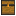
構造物の宝箱に、特別な装備が入ります。古代都市、ピラミッド、海底神殿、ネザー要塞、エンドシティ。こうした場所の宝箱には、もともと入っていた宝物に加えて、オーバーリミット装備が1つ混ざります。
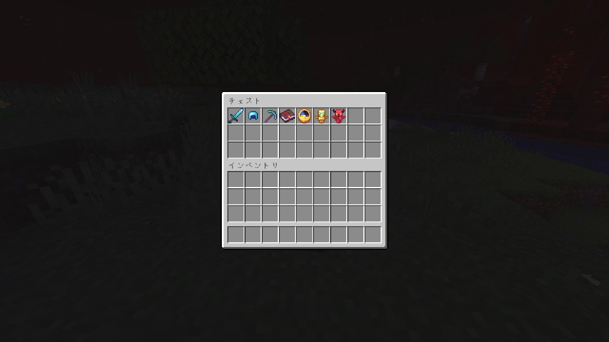
剣もツルハシも防具も、ほとんどがダイヤ製です。付いているエンチャントは、自分では付けられない強さです。その代わり、死ぬとその装備は消えます。次の構造物まで持って帰る、という目標がそのまま生まれます。
宝箱から出たときだけ、いつもの上限を超えたエンチャントが付きます。金床で修理すると、超えた分はいつもの上限に戻ります。
装備とエンチャントの本には、死んだときにそのアイテムが消える呪いが付いています。トーテムと、ごくまれな名品は例外です。
宝箱に懐中時計が入っていることがあります。1つ使うと、ベッドを置いた場所へ戻れます。ベッドがなければ、ワールドの初期地点です。
ゾンビやスケルトンは、ほとんど今までどおりです。ときどき、頭の上に色のついた名前を出した敵が混ざります。名前が強いほど倒しにくく、もらえる経験値は少なめです。
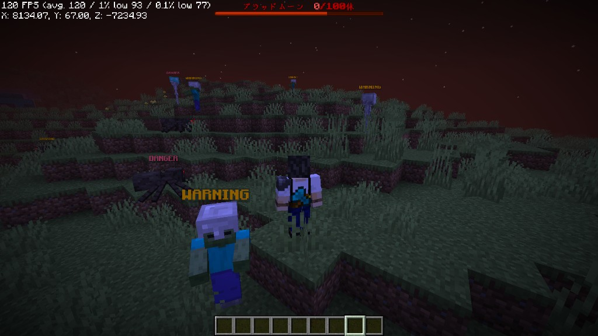
いちばんよく出会います。体力は2倍です。鉄のヘルメットをかぶっていて、攻撃力はそのままです。
ときどき現れます。体力は4倍、近接の一撃は2倍です。ダイヤのヘルメットをかぶっています。
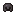
CRISISまれに現れます。体力は6倍、攻撃も守りも3倍です。少し大きく、ネザライトのヘルメットをかぶっています。
ごくまれに現れます。体力は10倍、攻撃も守りも5倍です。さらに大きくなります。足元が狭いと、大きくなりません。
すでに名前の付いている相手、エンダードラゴン、ウィザー、ウォーデンは変わりません。世界が荒れてくると、普段の野良にも強い名前が増えていきます。
BLOOD MOON
3日に1回の夕方、ブラッドムーンが起きるかどうかが決まります。最初の確率はおよそ3回に1回です。起きなかった回の次は、起きやすくなります。
霧は暗い赤になります。ベッドでは眠れません。湧く敵は、名前を持ったものだけです。遠くにいても、プレイヤーを見つけて近づいてきます。100点分の敵を倒すか、朝が来るか。先に来た方で夜は終わります。倒しきったときだけ、その場にいる全員の足元に報酬のチェストが置かれます。
強い名前ほど点数が高いです。WARNING は1点、CRISIS は3点、DISASTER は5点です。朝まで耐えただけでは、チェストは出ません。その夜をやり過ごすと、次の夜が少し厳しくなります。
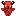
凶兆のトーテム宝箱にまれに入る、使い切りのアイテムです。オーバーワールドか、このあと出てくる赤い世界で使うと、その夜のブラッドムーンを自分から呼べます。ネザーとエンドでは使えません。赤い夜以外にも、いる場所によって戦いが始まります。
一度でも近づいたネザーポータルが、ある夕方からピグリンに攻められます。30分間耐え、湧いた敵をすべて倒すと勝利です。負けると、ポータルの周りの地面がネザーの土に変わり、その跡は残ります。
 要塞で戦いが始まる
要塞で戦いが始まるネザーに長くいると、ネザー要塞やピグリンの砦に入った瞬間、そこが戦場になります。地面は燃えません。その代わり、次にポータルを攻められる夜が一段厳しくなります。
エンダードラゴンを倒したあと、エンドシティに入ると、本来そこにいない敵が湧きます。空に浮く敵は大量には出ません。最後に、一回り大きなエンダーマンが1体出ます。中央の島では起きません。
要塞とエンドシティの戦いは、入った瞬間に始まります。チャットに場所が表示され、経験値バーの上に戦場の印が出ます。あとからそのワールドへ入った人も、その印を頼りに合流できます。
不吉な予感を持ったまま異変が始まると、弱い名前の敵は出ず、クリアしたときのチェストと経験値が2倍になります。村で襲撃が始まると、その兆しはすでに消費されています。
ANOTHER NIGHT
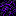
泣く黒曜石の先は、毎晩が赤い夜です。黒曜石のポータルは、今までどおりネザーへつながります。枠を泣く黒曜石で組んで、火打石で着火すると、別のワールドへ行けます。
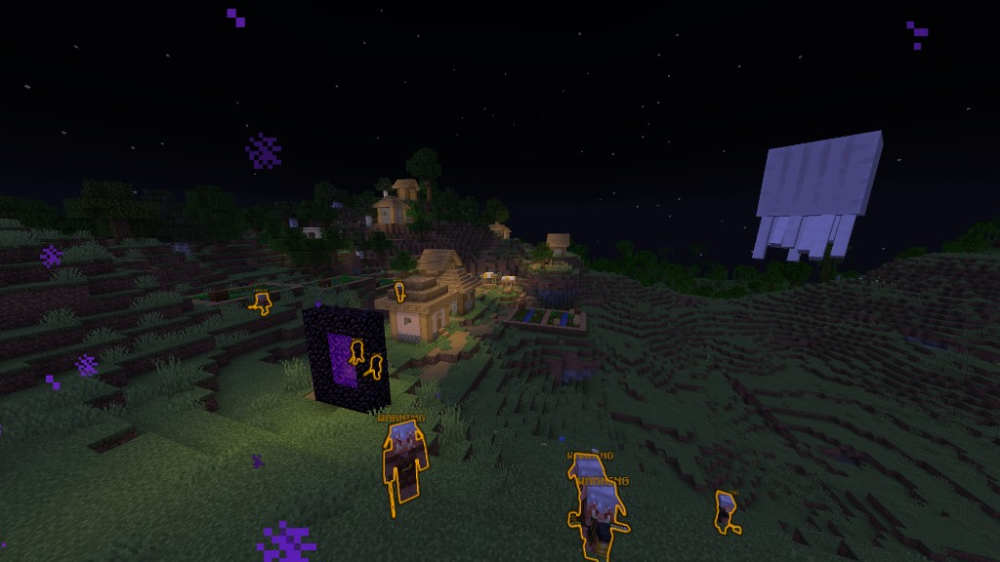
地形は見慣れた陸地に似ていて、ところどころネザーの色が混ざります。霧はいつも暗い赤です。雨は降りません。ベッドでは眠れず、死ぬと元のワールドの初期地点に戻ります。夜になるたびに、抽選なしでブラッドムーンが始まります。昼になれば、また探索できます。
オーバーワールドがブラッドムーンのあいだは、こちらへは入れません。帰ることは、いつでもできます。
消える装備と、自分で作る備え。宝箱の装備は強い一方、死ぬと消えます。作業台で作るアイテムは宝箱には入らず、戦い方を自分で選べます。
不死鳥の護符不死のトーテム3つから、2つ作れます。致命傷を一度だけ防ぎ、持っている数が減ります。複数を1つの欄にまとめられるので、手を持ち替えなくて済みます。奈落の底は防げません。
弓を金ブロックで囲んで作ります。矢が速く、当たった相手がしばらく光ります。修理には金ブロックを使います。
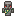
ミニゴーレム鉄ブロックから作る、小さな番人です。通常より一回り小さく、体力は多めです。プレイヤーは攻撃しません。近くに誰もいなくなるか、戦いが終わると消えます。
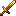
UNLIMITED何百個もの宝箱に、1つだけ入ります。死んでも消えない、名前のある武器と鎧です。剣は斬撃を飛ばし、斧は足元を爆破し、金の鎧はダメージを受けると体力が少し戻ります。
消える装備が2つ余ったら、間にダイヤブロックを挟んで打ち直せます。成功すると、新しい装備が1つできます。ごくまれに、それが UNLIMITED になります。呪いの付いていないアイテムや、すでに UNLIMITED のアイテムを素材にすると失敗し、装備は戻ってきません。
一度クリアして終わりではありません。勝ち方と、やり過ごし方の両方が、次の夜の強さを変えます。
今夜だけ止めたいときは、
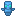
静寂のトーテムを1つ使います。起きている異変が報酬なしで収まり、世界圧が少し上がります。世界圧そのものを0に戻したいときは、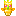
聖王のトーテムを使います。すでに起きている戦いまでは止められません。